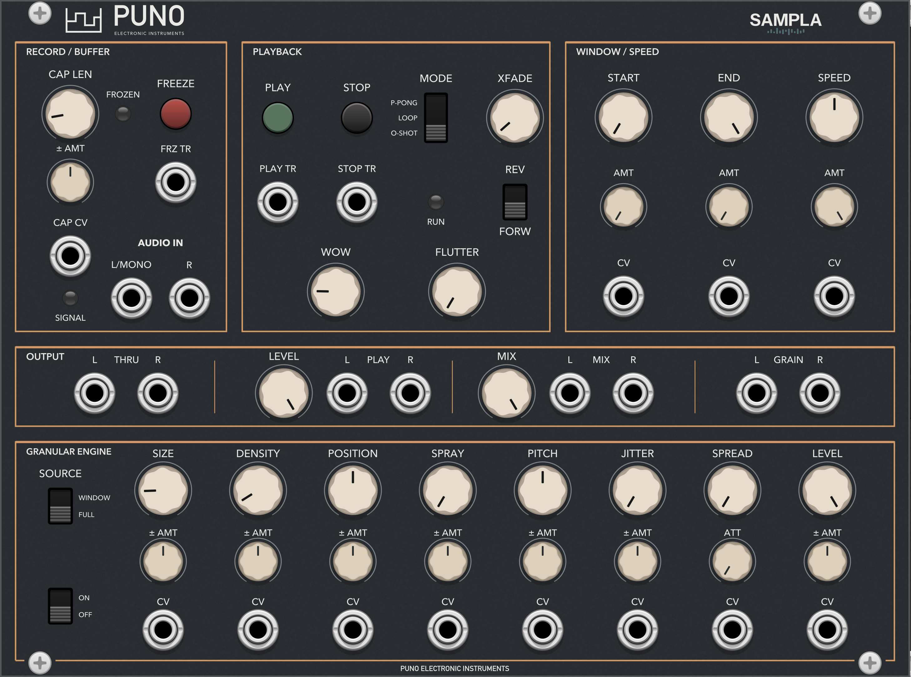

Introduction
SAMPLA is a stereo sampler and granular instrument. It listens to the audio patched into its inputs and keeps up to 60 seconds in a rolling buffer. Press FREEZE to capture the most recent audio, then play it once, loop it, or use it as the source for a stereo grain texture.
SAMPLA captures audio through its inputs. To use a WAV or another audio file, play it through a separate source and patch that source into SAMPLA.
Getting Started
Start with a sound you know, such as a synth phrase or a drum pattern. Patch it into L/MONO, adding R if your source is stereo. Connect PLAY L and PLAY R to your listening chain, and turn up LEVEL in the OUTPUT section.
Let the phrase run so SAMPLA can collect it in the rolling buffer. Set CAP LEN to the amount of recent audio you want to keep. Two seconds is a good starting point. Press FREEZE just after the part you want to capture and wait for FROZEN to turn green.
For a first listen, set MODE to O-SHOT and the direction to FORW. Turn START all the way down and END all the way up, then center SPEED. Press PLAY to hear the capture once.
Turn SPEED a little counterclockwise and press PLAY again to hear the phrase slower and lower in pitch. Or switch to LOOP and press PLAY to let it repeat while you adjust the speed.
Panel Overview

- Record / Buffer
- Audio inputs, signal and capture indicators, capture length and Freeze controls.
- Playback
- Transport buttons and triggers, mode, direction, crossfade, wow and flutter.
- Window / Speed
- Start and end of the playback region, speed and their CV controls.
- Output
- Four stereo pairs, plus playback level and dry/wet mix.
- Granular Engine
- Source region, engine switch, grain controls and their CV inputs.
Recording, Freeze and Playback
The rolling buffer
SAMPLA automatically records incoming audio into a circular buffer. Once full, each new frame replaces the oldest. SIGNAL follows the level at L/MONO. Audio connected only to R does not light this indicator.
Freeze a capture
Press FREEZE or send a rising edge to FRZ TR. CAP LEN sets how much recent audio to capture, from 0.1 to 60 seconds (default 10 seconds). The effective length is sampled at the trigger. If less audio has been recorded, the capture contains only the available portion.
FROZEN flashes red while the copy is in progress. It turns orange briefly when the copy completes, then stays green while a capture is available. Recording pauses during the copy and resumes automatically. A trigger can be ignored while a copy is underway or when both frozen buffers are still in use.
Play the capture
Press PLAY or patch a rising edge into PLAY TR. RUN lights while the playback transport is active. Press STOP or trigger STOP TR to end playback. STOP takes priority over a simultaneous play event or an automatic restart after Freeze.
O-SHOT plays the window once, LOOP repeats it, and P-PONG alternates direction at the boundaries. FORW starts from the beginning of the window and REV from its end. START and END each span 0–100% of the capture. One-shot takes its window at the play event. Loop and ping-pong can follow changes during playback.
SPEED spans −2 to +2 octaves (¼× to 4× before modulation by WOW and FLUTTER). The center is original speed. XFADE sets the crossfade at loop seams and ping-pong turns from 0 to 500 ms (default 30 ms). Short windows limit the effective fade. Automatic click protection remains active at zero. WOW adds slow periodic speed variation and FLUTTER adds faster irregular variation. Both range from 0 to 100% and default to zero.
When a new freeze completes during playback, the transport restarts on the new capture with a short transition. When playback is stopped, the new capture waits for PLAY.
Granular Engine
With a capture ready, set the engine switch to ON and listen at GRAIN L/R. The grain engine runs independently of the playback transport, so it can sound while RUN is off. SOURCE selects the entire capture (FULL) or the region between START and END (WINDOW).
| Control | Range | What it changes |
|---|---|---|
| SIZE | 10–1000 ms | Requested grain length. The engine can shorten a grain to fit the selected region. |
| DENSITY | 1–100 grains/s | Grain scheduling rate. At most 64 grains can overlap. |
| POSITION | 0–100% | Moves grain starts through the usable part of the selected region. |
| SPRAY | 0–100% | Randomizes the starting position around POSITION, within the region. |
| PITCH | −24 to +24 semitones | Transposes each new grain. |
| JITTER | 0–100% | Varies the time between grains. Zero gives regular spacing. |
| SPREAD | 0–100% | Widens the random distribution of new grains toward the left and right. Zero retains the capture’s stereo placement. |
| LEVEL | 0–100% | Sets the level of the GRAIN outputs. |
Important note. In WINDOW, new grains require END to be higher than START after CV is applied. A very short region may also prevent new grains from fitting.
CV Modulation
The CV amount knobs set how far a voltage moves its control around the manual setting. With ± AMT, the center gives zero modulation and negative settings invert the response. AMT and ATT scale modulation from zero to full depth. Effective control values stay within their operating ranges.
| Input | Amount | Response at full depth |
|---|---|---|
| CAP CV | ± AMT | ±10 V spans the full capture-length range. The value is read when Freeze starts. |
| START, END CV | AMT | +10 V adds the full window range, and −10 V subtracts it. |
| SPEED CV | AMT | 1 V/octave before the speed limits. |
| SIZE, DENSITY, POSITION, SPRAY, PITCH, JITTER, LEVEL CV | ± AMT | ±10 V spans the full range of the corresponding grain control. |
| SPREAD CV | ATT | +10 V increases spread by the full range, and −10 V decreases it. The result sets the spread of each new grain. |
| FRZ TR, PLAY TR, STOP TR | — | A rising edge performs the corresponding action. A held gate does not repeatedly trigger it. |
Inputs and Outputs
Use L/MONO alone to feed the same signal to both sides. Connecting R replaces the right side with its own signal. With only R patched, the left side stays silent. Each audio jack reads the first channel of a polyphonic cable. Each output jack carries one audio channel.
| Pair | Signal |
|---|---|
| THRU L/R | Live audio inputs, after mono normalization. |
| PLAY L/R | Sample playback, controlled by LEVEL in the Output section. |
| MIX L/R | Linear blend of THRU and PLAY. Turn MIX fully down for dry, or fully up for playback. |
| GRAIN L/R | Granular audio, controlled by LEVEL in the Granular Engine section. |
Practical Examples
Try it: Loop a phrase at a new speed
Patch a short rhythmic phrase into the audio inputs, set CAP LEN to its approximate duration and press FREEZE. Set MODE to LOOP, press PLAY, and listen at PLAY L/R. Adjust START and END to trim the loop. Turn SPEED down to slow and lower it, or up to accelerate and raise it. Increase XFADE if the seam is audible.
Try it: Replace a loop while it plays
Leave a capture looping and feed a different phrase into the audio inputs. Allow enough time for the new phrase to fill the length set by CAP LEN, then press FREEZE. Keep listening at PLAY L/R. When the copy completes, the transport switches to the new phrase. If a rapid second Freeze is ignored, wait for the previous copy and transition to finish and try again.
Try it: Build a stereo grain texture
Freeze a sustained or slowly changing sound. Set SOURCE to FULL, switch the granular engine ON, and patch both GRAIN outputs. Start with SIZE near 200 ms and DENSITY near 10 grains/s. Move POSITION to find a useful part of the capture, then raise SPREAD to distribute the grains across stereo. For movement, patch a slow LFO into POSITION CV and turn its ± AMT slightly clockwise.
Technical Notes and Troubleshooting
This manual covers SAMPLA 2.0.0, tested in VCV Rack Pro 2.6.6 on macOS ARM64. Rack saves the module’s settings and patch connections. Captured audio and transport state are volatile. Freeze a fresh capture after reopening a patch or changing the engine sample rate.
- THRU works, but PLAY is silent
- Wait for a complete capture, press PLAY and check playback LEVEL. In O-SHOT, playback ends automatically. Use LOOP if you want it to continue.
- GRAIN is silent
- Check that a capture is available, the granular engine is ON, and its LEVEL is above zero. Try FULL to rule out a narrow or inverted window.
- The captured phrase is shorter than expected
- Give the source time to fill the requested length and check CAP CV and ± AMT. The length is fixed when the trigger is accepted.
- The patch cannot find SAMPLA
- Check that the release plugin is installed. A patch saved with the earlier development identifiers needs a migrated copy. Keep the original patch and consult the release’s migration instructions.